Inicio
Proxmox Virtual Environment es una solución completa de virtualización, que funciona sobre Debian GNU/Linux, permitiendo la creación y gestion de máquinas virtuales como OpenVZ o KVM.
Sus principales caracteristicas son:
1. Software Libre: Acceso completo al código, creación de ramas paralelas, etc.
2.Funciona sobre Debian GNU/Linux: Al ser Debian tan estable, se limitan los problemas debidos al SO.
3.Soporte OpenVZ: Permite crear contenedores de paravirtualización, de alto rendimiento, pero más dependientes del SO anfitrión.
4.Soporte KVM: Permite crear máquinas virtuales KVM, completamente independientes del SO anfitrión, que pueden tener su propio kernel, cortafuegos, etc.
5.Software vivo: Las actualizaciones de Proxmox son constantes, tanto para la solución de errores, como añadir nuevas caracteristicas.
6.Interfaz web de gestión: Simplifica y facilita el trabajo, evitando usar la consola de comandos.
7.API remota: Permite acceso remoto usando cualquier lenguaje de programació a todas las funciones.
8.Migración en vivo: Permite mover una máquina virtual entre servidores físicos sin caídas de servicio.
9.Cluster: Permite crear clusters de servidores para entornos profesionales.
10.Alta Disponibilidad: Ofrece características de alta disponibilidad , permitiendo migrar máquinas de nodo con un par de clicks de ratón.
Instalación
Lo primero de todo utilizaremos la opción mas sencilla que es, utilizar un USB booteable.
Para ello nos descargaremos la ISO de Proxmox, aqui.
Cuando hayais descargado la ISO y lo habeis añadido al USB solo faltaria introducir el USB en el micro servidor.
En el proceso de la instalación nos pedira una contraseña y nos pedira introducirla de nuevo para confirmarla para acceder al servidor y un mail.
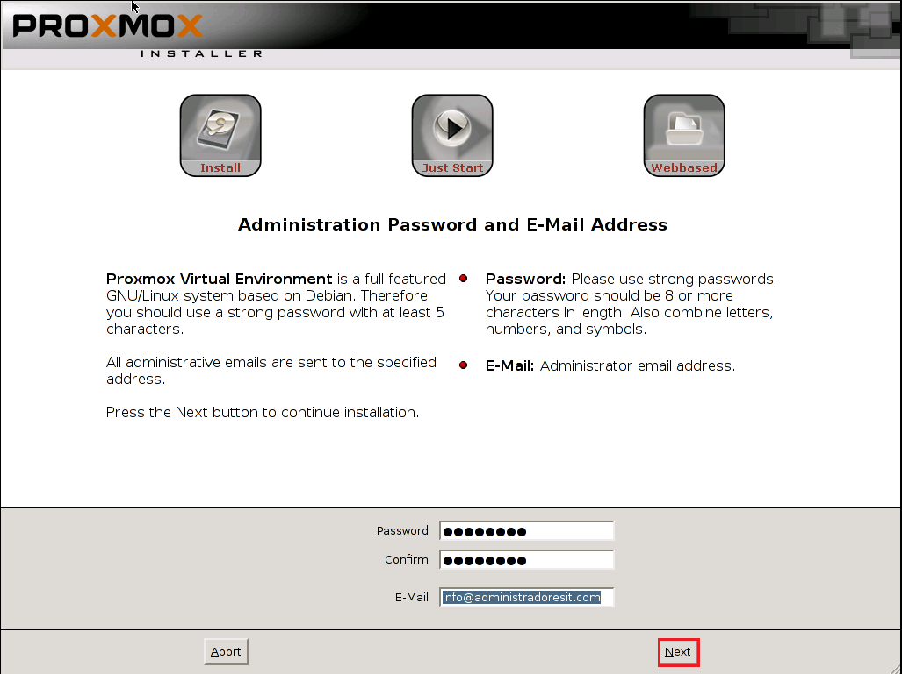
Configuración
Por ultimo tendremos que añadir la configuración para el servidor que sera lo siguiente.
IP->Numero de identificación una red de un dispositivo.
Mascara->Es una combinación de bits que indican que parte corresponde a subred y que parte al hots.
Puerta de Enlace->Es un sistema de la red que permite acceder a otra red.
DNS->Es un sistema de dominios para alojar una web u otrs servicios asociados.
Al poner todos estos datos le daremos a NEXT y el PROXMOX terminara de instalarse.

Después de la instalación se reiniciará el servidor y podremos entrar en lo que es la ventana de comandos de proxmo que no utilizaremos.
Ahora vamos a un equipo y pondremos la IP fisica que le hemos dado a nuestro servidor: 'https://"IP":8006' al introducir en la URL nos sandra la siguiente ventana:
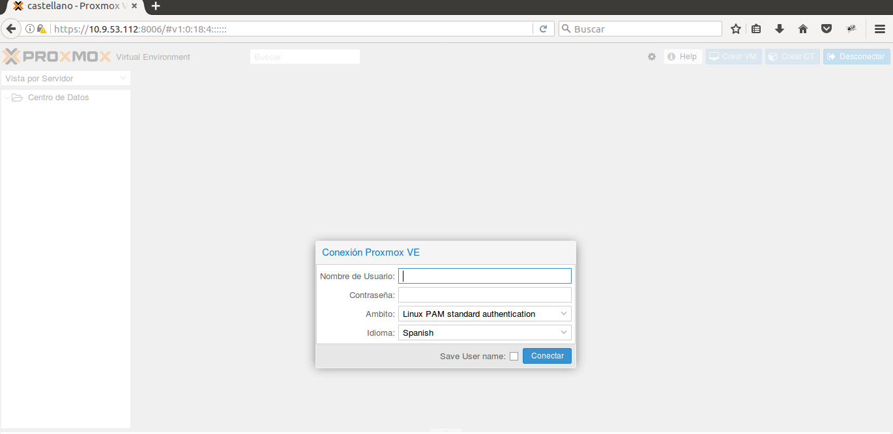
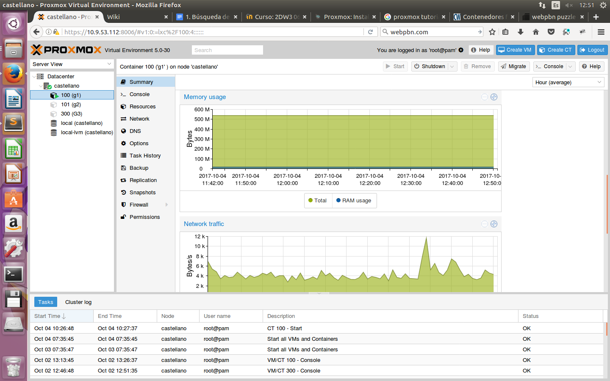
Virtualización
Ya con el servidor de Proxmox instalado, toca decidir entre 'Maquinas Virtuales' o 'Contenedores'.
Maquinas Virtuales
Hay varias razones de utilizar MV, una de ellas es que quieras instalar un sistema operativos de windows, otra trata de querer flexibilidad y ejecutar multiples aplicaciones, y por ultimo es que te preocupa la seguridad y una MV te proporciona muchisima seguridad comparada con un contendor.
Plantilla
Para utilizar los contenedores tendre que instalar dentro de ellos las plantillas corespondientes al SO que deseeamos.
Para descargar la plantilla nos iremos a local --> Content --> Templates, y seleccionaremos la plantilla que deseamos.
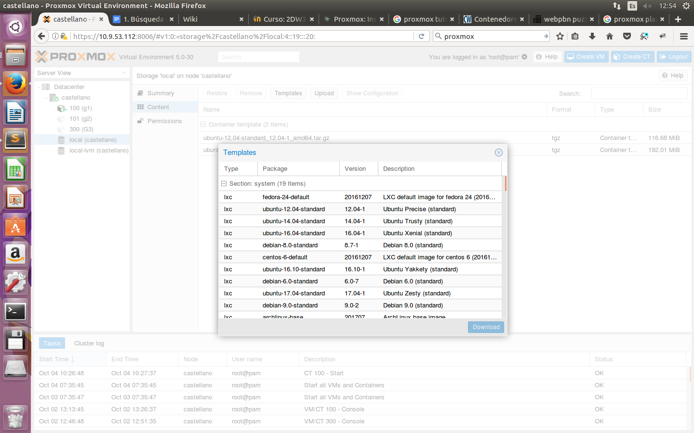
Una vez descargada la plantilla que deseamos, procederemos a la instalacion del contenedor en el que tendremos que asignarle datos como:
Contraseña de acceso, IP, Mascara, DNS.
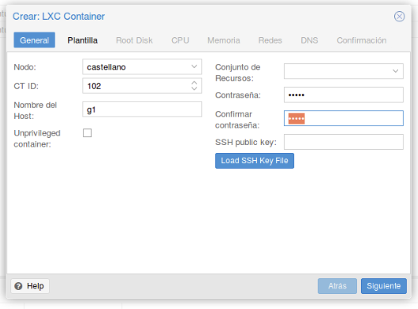
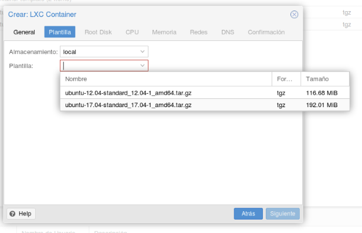
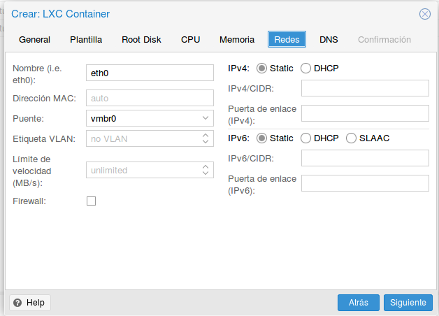
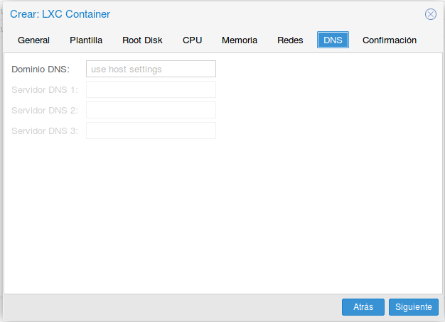
Una vez instalada la plantilla como Contenedor en proxmox lo iniciamos y nos aparece un resumen y un apartado de consola para controlar instalaciones y configuraciones del server linux.
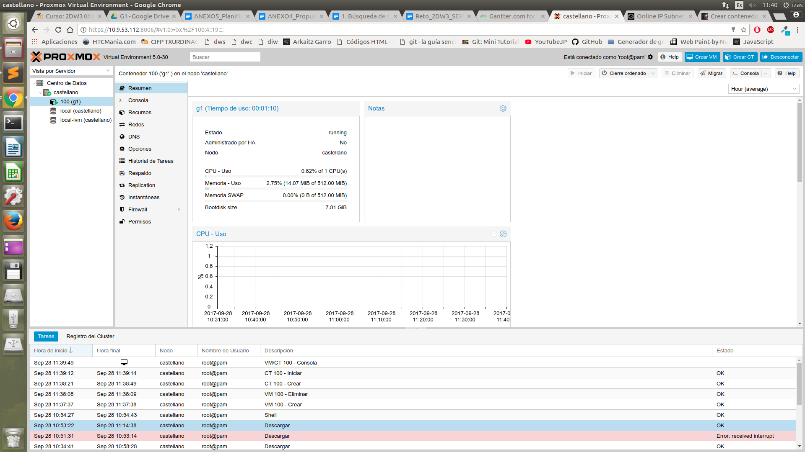

Inicio
El servidor Apache HTTP, también llamado Apache, es un servidor web HTTP de código abierto para la creación de páginas y servicios web.
Instalación
Para instalar Apache necesitaremos de un Sistema Operativo Linux. Abriremos el terminal y pondremos el siguiente comando "sudo apt-get install apache2"
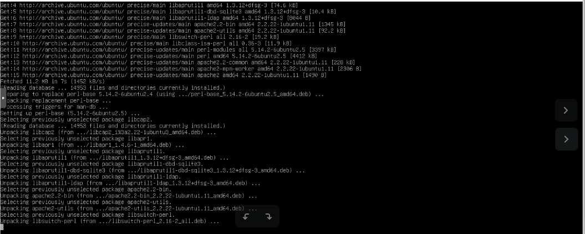
Una vez instalamos el apache, para comprobar su funcionamiento y que conecta correctamente necesitaremos primero saber cual es nuestra IP Local, para ello haremos un ifconfig en la terminal. Una vez nos muestre la IP, abriremos el navegador e ingresaremos la IP. Si hemos realizado la instlacion correctamente deberia salirnos una pagina de Inicio
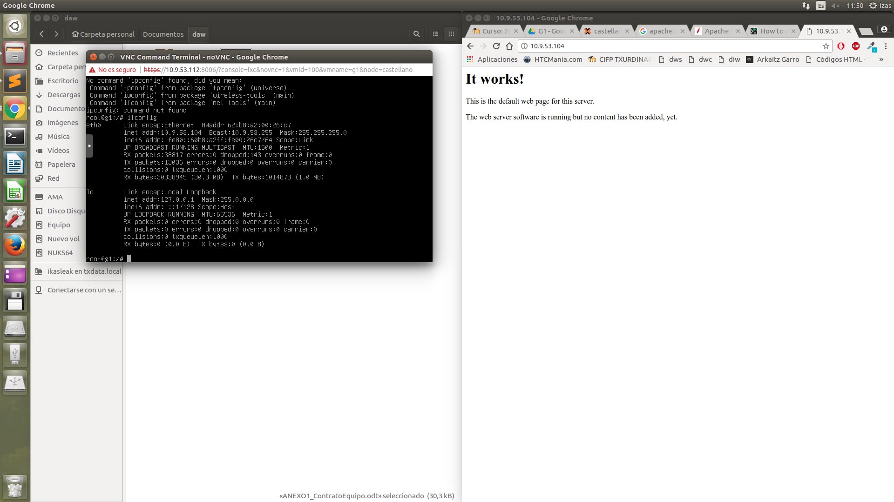
Configuracion
Para acceder al fichero de configuracion de la web local de Apache, ingresaremos el terminal y haremos un cd a al siguiente directorio "cd /var/www", una vez dentro del directorio con un ls buscaremos el fichero index.html y haremos un nano para abrilo con el editor de texto desde el cual ya podriamos editar el codigo HTML y añadirle un CSS si quisieramos.
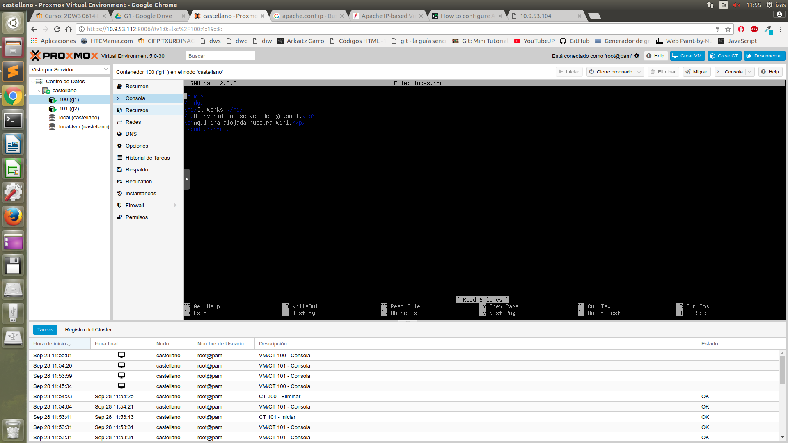
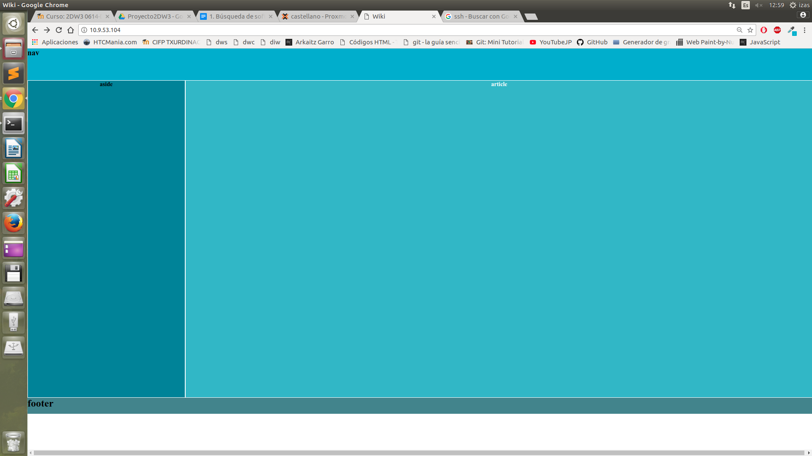
¿Que son Git y GitHub?
Git es un software de control de versiones, pensado para mantenimiento de versiones de aplicaciones cuando estas tienen un montón de archivos en el código fuente.
Control de versiones: Es un sistema que registra los cambios realizado en un archivo o un conjunto de archivos. Cada uno de los cambios se guardan dando la posibilidad de recuperar versiones pasadas de esos archivos si así lo deseamos.
Gracias a git podemos:
- Saber quien y cuando se ha cambiado el código fuente.
- Volver a versiones anteriores de forma rápida.
- Control de versiones a través de etiquetas (versión 1.0, 1.1, 1.2, …).
- Comparar versiones para ver qué cambios ha habido de una a otra.
GitHub es una herramienta que se usa para trabajar en equipos distribuidos en un mismo proyecto. Gracias a esto, distintas personas de distintos lugares pueden trabajar de forma común en un proyecto, pudiendo compartir sus archivos y coger los del resto de usuarios.
Manual de Git y GitHub
Git add NombreArchivo: Subir cambios.
Git commit -m NombreConsolidacion: Crear consolidaciones.
Git status: Comprueba si hay cambios.
Git log: Ver las consolidaciones que tengo.
Git remote add origin "url": Añadir dirección de repositorio.
Git remote add origin: Añadir al repositorio.
Git remote -rm origin: Eliminar el repositorio.
Git push -u origin master: Subir consolidaciones al github
Git clone "url repositorio": Descargar el repositorio en local.
Para ello vas al repositorio deseado y das a “Clonar o descargar”. Allí, aparecerá la url.
Otra opción es descargarlo en forma de ZIP desde este mismo lugar y descomprimirlo.
Git pull: actualiza las modificaciones hechas por los compañeros
Inicializar Git. (Pasos)
1. Creamos la carpeta donde vayamos a para nuestro proyecto.

2. Desde la terminal, accedemos a la carpeta de nuestro proyecto.

3. Utilizamos el comando git init.

Añadir archivos a un repositorio de GitHub desde local (pasos).
1. Desde la terminal, accedemos a la carpeta de nuestro proyecto.

2. Una vez alli, realizamos un Git add NombreArchivo (para subir una archivo) o Git add . (para subir todos) y añadir el nuevo archivo.

3. Ahora debemos poner la url de el repositorio del GitHub donde pensamos meter los archivos, usando la orden git remote add origin URL

4. Luego usamos Git commit -m NombreConsolidacion para crear una nueva consolidación con la modificación del archivo o los archivos.

5. Con la nueva consolidación creada, ya solo nos quedaría usar el Git push -u origin master para subir la nueva consolidación a GitHub.

Si estas colabornado con mas gente, antes de subir la consolidacion debes comprobar que si tus compañeros han hecho algun commit. Para ello debes hacer un pull (Se explica en el siguiente paso) antes de hacer el commit y despues de poner la URL del repositorio. (Entre el paso 3 y el 4).
Obtener modificaciones de un repositorio de GitHub desde local (pasos).
El unico paso a realizar para coger las modificaciones hechas en un repositorio es escribir el comando git pull origin master.